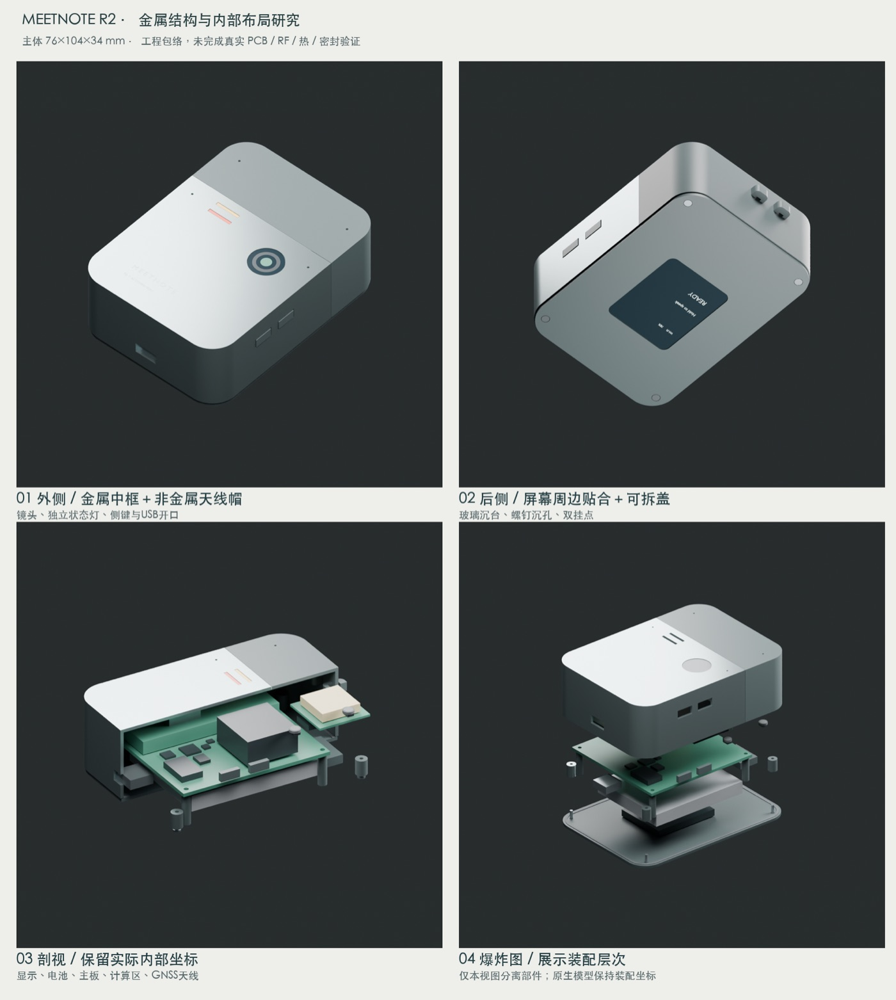

MEETNOTE / R2 / 2026.09.29
金属外壳、局部贴合，
把传感器和装配空间一起算进去。
已建立60个最终几何对象，含GNSS天线、IMU、屏幕盖板、胶层、螺钉和电池余量。主体76×104×34mm；整体研究估算155–190g。
这一版偏大、偏重，用于揭示单台样机的真实工程代价。几何检查无正体积相交，但并非已完成可制造装配；真实PCB、天线匹配、连接固定、排线与连续密封仍待完成。

金属与天线并存，胶用于合适的位置。
金属前壳/中框承担结构与热扩散；顶部保留非金属天线帽，后盖可拆。屏幕和镜头保护片采用周边贴合，首件保留返修能力，不整腔灌封，也不宣称防水等级。
蓝牙沿用计算板已有能力；GNSS用于用户开启的位置记录；IMU可触发运动事件和亮屏，默认不自动启动录音或拍照。
只做一台的费用预留
首轮约1985–4530元；加25%返修余量约2480–5660元。均为预算范围，尚无正式报价，不含研发工时、仪器、认证、云服务和定制光学全贴合。
工程文件
FreeCAD源文件 · 整体STEP · Blender源文件 · 完整成本CSV
设计与验证边界 · 单台费用口径 · 几何检查
参数化方式：编辑parameters.json后运行生成脚本；FreeCAD保留原生可编辑布尔特征。Spreadsheet是参数快照，未全量关联驱动。R0 PCB STEP仅作隐藏参考，不是R2主板。
← 项目主页